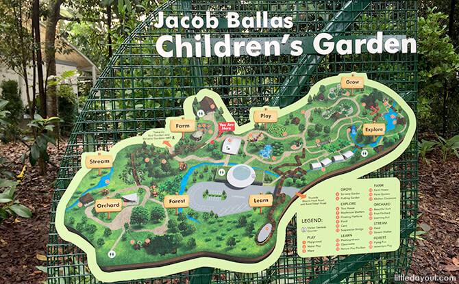
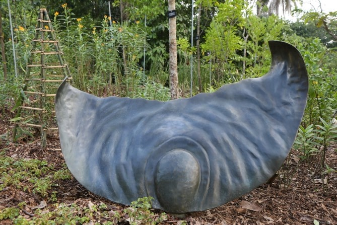
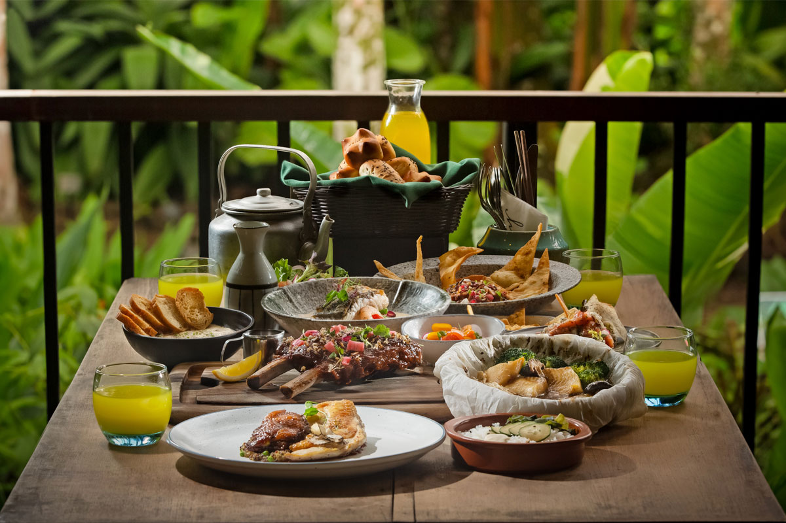
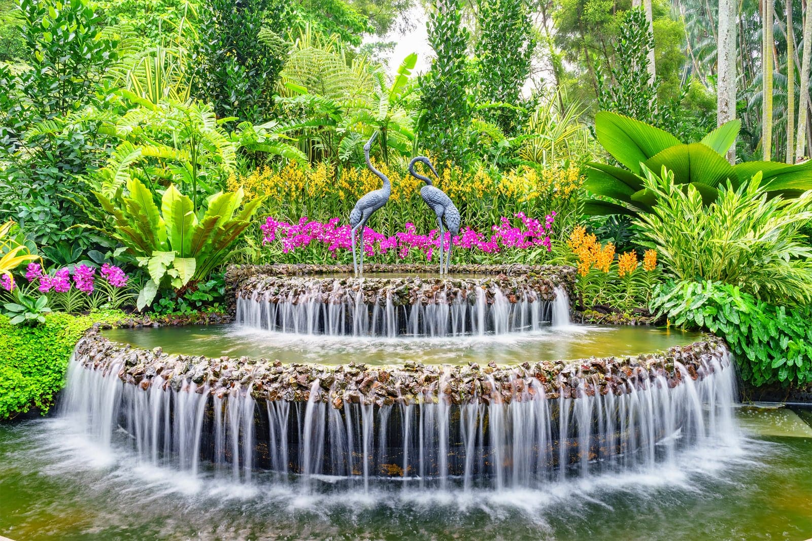
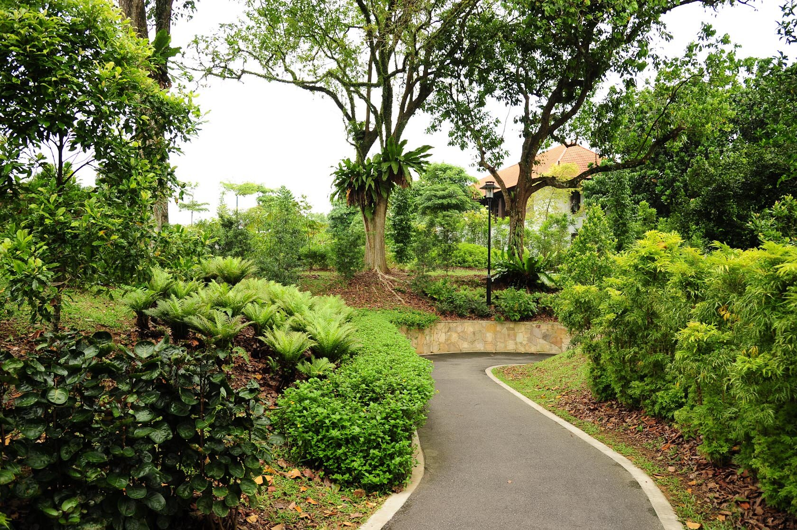
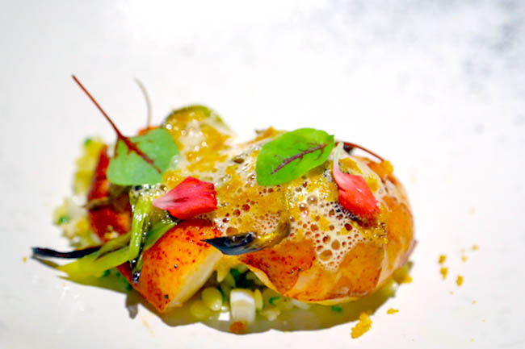

This is the first ever garden in Asia dedicated to children to instil a love for nature in children. There are many carefully curated trails which children may choose to follow and embark on an adventure!
8.00am - 7.00pm
(last admission at 6.30pm)
Closed on Mondays
Click here for the latest news!
Opened on 13 July 2019, the Singapore Botanic Gardens Seed Bank is a conservation, research and education facility that focuses on conserving plant species by preserving the seeds and germplasm of plants in Southeast Asia. The Seed Bank has an interpretive gallery that introduces the Seed Bank and explains its importance to plant conservation and research in Singapore and the region, as well as a seed dispersal garden with seed sculptures showing the different seed dispersal mechanisms.
9.00am - 6.00pm
Closed last Friday of the month
Click here for the latest news!
Have you ever wondered how many species of ginger are there in the world? Ginger is used not only in cooking, but it is also known to have medicinal properties. Take a trip down to the Ginger Garden to explore the different varieties of ginger. While you're at it, why not enjoy a sumptuous meal at The Halia Restaurant? Yummy!
Mon - Fri: 9.00am - 8.30pm
Sat, Sun & PH: 10.00am - 8.30pm
Click here to book a table now!
As Singapore's national flower, orchids have been bred since 1928 by the Gardens' horticultural staff. This garden holds over 1000 species and 2000 hybrids on display, so expect to be blown away by the amazing spectacle of some gorgeous blooms! You wouldn't want to pass up this opportunity to witness such a beautiful sight!
8.30am - 7.00pm
Click here for the latest news!
The Healing Garden spreads over 2.5 hectares and contains over 400 varieties of medicinal plants. Embark on a journey as you discover the ability of these plants to improve our quality of life. Definitely a peaceful place to visit with your family and friends!
5.00am - 7.30pm
Closed on Tuesdays
Click here for the latest news!
Previously the residence of the Assistant Director of the Garden, it has now been converted into a restaurant. Corner House, opened since 2014, has proudly sustained its one Michelin star and has been ranked in Asia's 50 best Restaurants for the past few years. Get ready for a gastronomic experience with dishes that showcase a combination of French and Asian cuisines.
Lunch: 12.00pm - 3.00pm (last order 1.30pm)
Dinner: 6.30pm - 11.00pm (last order 8.30pm)
Closed on Mondays
Click here to book a table now!
Bus: 48, 66, 67, 151, 153, 154, 156, 170, 170A, 186
Bus: 7, 7B, 75, 77, 105, 106, 123, 174